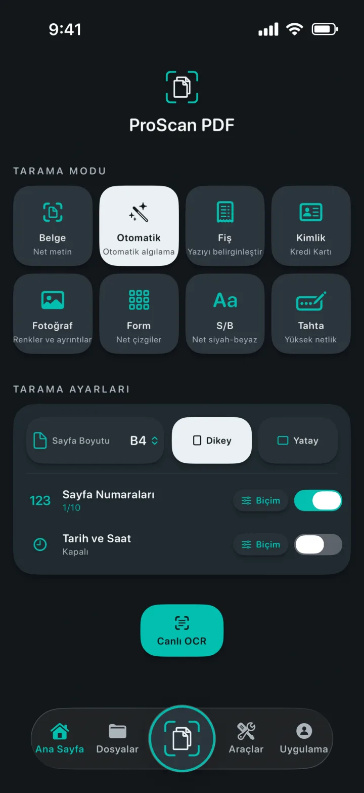
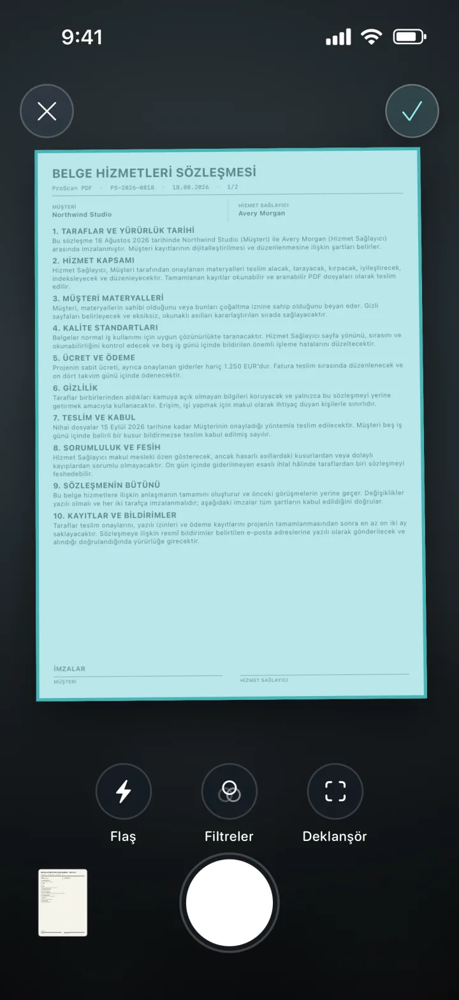
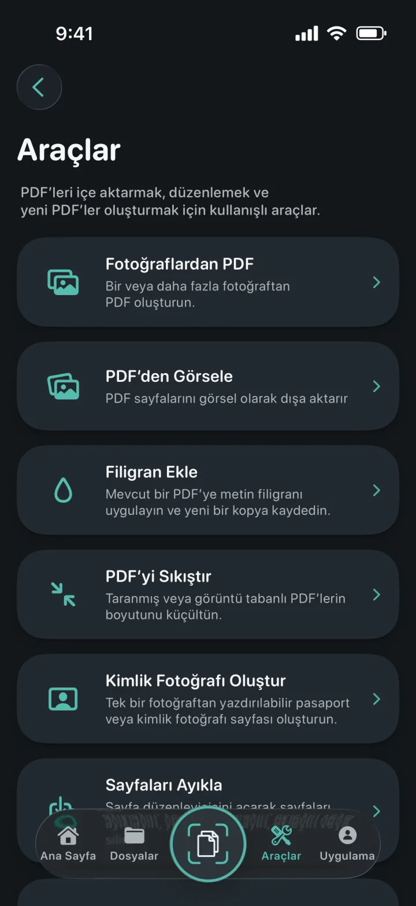
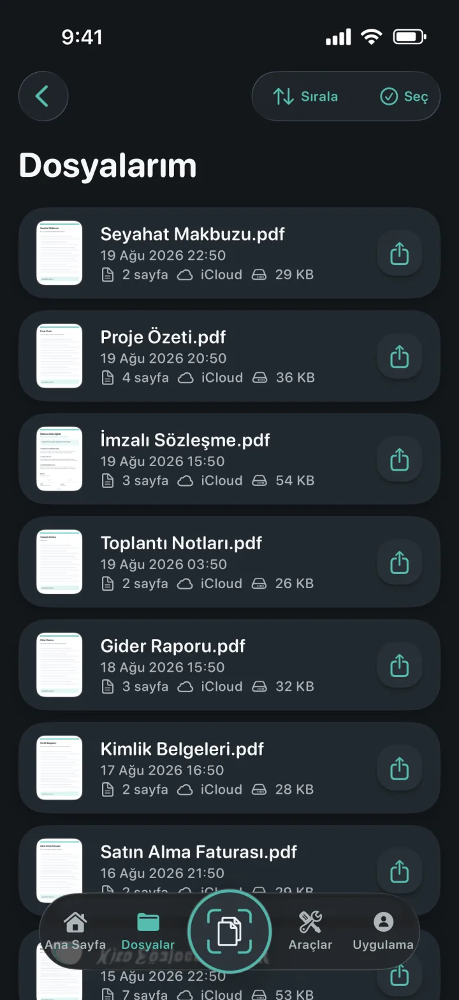
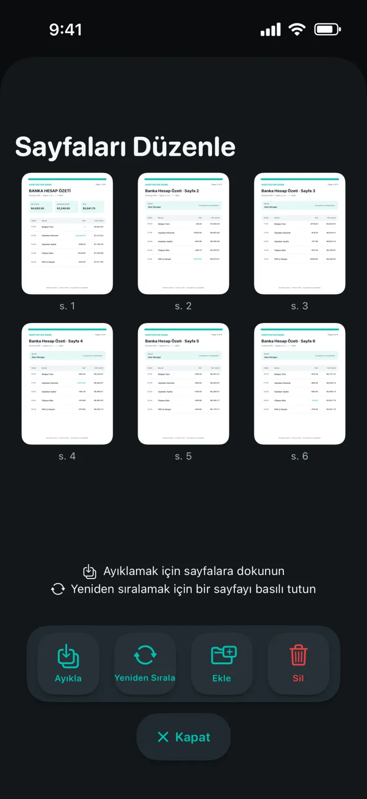
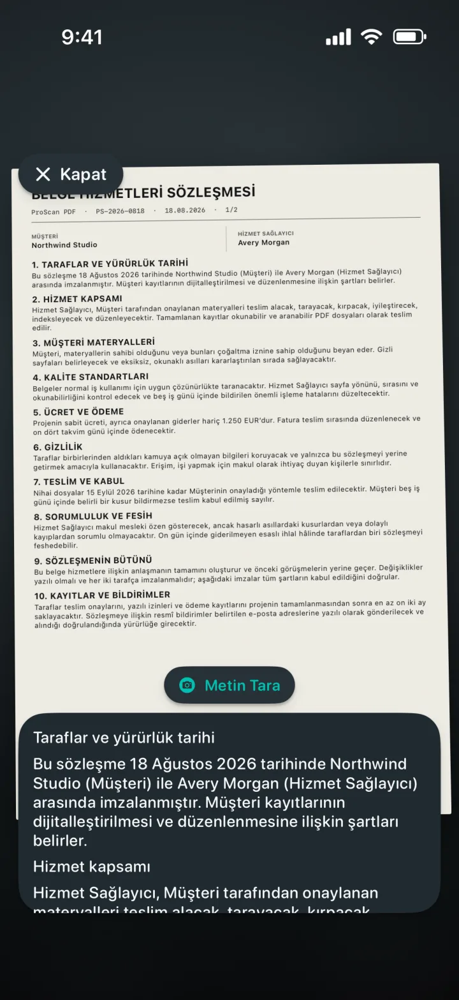

Fotoğraflardan PDF
Bir veya daha fazla fotoğrafı düzenli bir PDF’ye dönüştürün.
Her sayfayı anlayan bir tarayıcı
Belgeleri, fişleri, kimlikleri, notları ve fotoğrafları düzenli PDF’lere dönüştürün. Ardından reklam veya filigran olmadan düzenleyin, imzalayın, koruyun ve paylaşın.

Her sayfayı anlayan bir tarayıcı
Doğru modu seçin, sayfayı kadraja alın ve çekimi Apple’ın belge tarayıcısına bırakın. Başlamadan önce sayfa boyutunu, yönü, sayfa numaralarını ve tarih-saat bilgisini ayarlayın.

Tüm PDF araçları tek yerde
PDF’leri tek bir düzenli çalışma alanından içe aktarın, dönüştürün, düzenleyin ve oluşturun.

Bir veya daha fazla fotoğrafı düzenli bir PDF’ye dönüştürün.
Her PDF sayfasını görsel olarak dışa aktarın, kaydedin veya paylaşın.
Yeni bir PDF kopyasına renkli metin filigranı ekleyin.
Taranmış ve görsel tabanlı PDF’lerin dosya boyutunu küçültün.
Kırpın, kontrol edin ve tam ölçülerde ya da baskıya hazır sayfalar olarak dışa aktarın.
PDF sayfalarını ayıklayın, yeniden sıralayın, ekleyin veya silin.
Mümkün olduğunda düzeni koruyan, düzenlenebilir Word dosyaları oluşturun.
Aranabilir kopyalar oluşturun ve görüntüleyicide metin bulun.


Belgeleriniz düzenli kalır
Yerel kopyalar arşivin hızlı açılmasını sağlar. Özel iCloud yedeklemesi, başka bir Apple aygıtına geçtiğinizde belgelerinize erişmenize yardımcı olur.
Gizlilik tasarımın merkezinde
Tarama, OCR ve PDF işlemleri cihazınızda yerel olarak gerçekleşir. ProScan PDF belgelerinizi kendi sunucularına yüklemez.
Gizlilik Politikasını okuyunOCR ve aranabilir belgeler
Metni canlı yakalayın, taramalardan düzenlenebilir içerik çıkarın veya aranabilir PDF kopyaları oluşturun. Tüm işlemler iPhone ya da iPad’inizde yapılır.

Size göre tasarlandı
Her tema uygulamanın arayüzünü değiştirir ve uyumlu bir Ana Ekran simgesi sunar.
Grafit üzerinde tarayıcı turkuazı ve kâğıt beyazı.
Derin siyah üzerinde elektrik mavisi ve mor.
Açık kâğıt yüzeyinde temiz mavi kontroller.
Yumuşak kömür üzerinde mercan, mor ve mint.
Zarif gece mavisi üzerinde şampanya ve pudra tonları.
Grafit üzerinde soğuk gümüş ve parlak altın.
Koyu orman yeşili üzerinde sıcak krem ve terakota.
İngilizce, Almanca, İspanyolca, Fransızca, İtalyanca, Felemenkçe, Lehçe, Brezilya Portekizcesi, Avrupa Portekizcesi, Türkçe, Basitleştirilmiş Çince, Japonca, Korece ve Hintçe dillerinde kullanılabilir.
Sorularınızın yanıtları
Gizlilik, depolama ve ProScan PDF ile yapabilecekleriniz hakkında net bilgiler.
Hayır. ProScan PDF uygulamada reklam göstermez ve taranan belgelere filigran eklemez.
Temel tarama, OCR ve PDF araçları cihazınızda çalışır ve çevrimdışı kullanılabilir. iCloud yedekleme ve paylaşım için ağ bağlantısı gerekir.
Belgeler hızlı erişim için uygulamanın yerel arşivinde tutulur. iCloud kullanılabildiğinde özel yedek kopyalar iCloud hesabınızda saklanabilir.
Fotoğraflardan PDF, PDF’den Görsele, filigran, sıkıştırma, kimlik fotoğrafı oluşturma, sayfa ayıklama ve düzenleme, PDF’den Word’e, aranabilir PDF, birleştirme, imzalama ve parola koruması.
Her gün üç ücretsiz tarama hakkınız vardır. Pro, sınırsız taramayı ve tüm Pro araçlarını açar.

Sıradaki belgeniz yalnızca bir dokunuş uzakta
Reklam yok. Filigran yok.